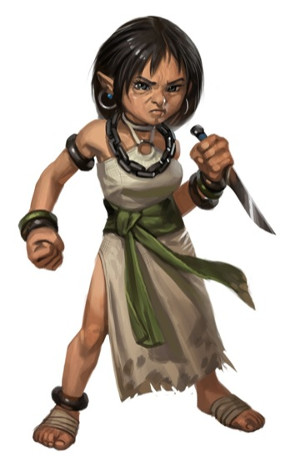

Backgrounds de perso
Les règles de D&D 5 possèdent en VO un nouveau concept officiel de background (traduit sur le site par historique), qui donne certains avantages techniques aux personnages. Mais ce mot anglais désigne également en jeu de rôle l'histoire d'un personnage au sens large, et non technique, du terme. C'est dans ce dernier sens que le terme background sera utilisé tout au long de cette page.
L'un des aspects les plus importants d'un personnage est en effet son histoire, son passé, son background donc, une chaîne d'événements qui ont marqué sa jeunesse et formé sa personnalité, qui ont fait naître en lui des doutes et des craintes, des rêves et des ambitions. Ces événements déterminent souvent comment le personnage voit la vie et comment il interagit avec le monde qui l'entoure. De plus, le background explique la plupart de ses actions et de ses réactions. Le background est donc aussi important que la personnalité.
Un autre aspect intéressant du background est qu'il permet à un MD de personnaliser une portion d’aventure. Cela veut dire qu'il peut, grâce au background, insérer dans un scénario des évènements liés au passé d’un personnage, créant ainsi des moments uniques et mémorables pour un joueur.
Si vous êtes à court d’imagination lors de la création de votre personnage, voici donc 100 idées (classées en 5 catégories) sur lesquelles vous pouvez baser son background. À vous ensuite de choisir le background D&D 5 adéquat pour que le tout forme un ensemble cohérent.
Backgrounds communs
d100 |
Background |
| 1 | Fils de paysan. Vous êtes l'enfant d'un paysan, libre ou serf, et vivez dans une ferme. Vous êtes curieux de savoir comment est vraiment le monde au-delà de la communauté dans laquelle vous avez grandi, et fasciné par les choses merveilleuses que vous découvrez lors de vos aventures. |
| 2 | Fils de marchand. Vous êtes l'enfant d'un marchand qui possède un atelier modeste, mais qui marche bien, dans une petite ou grande ville. Vous êtes à l’aise dans les milieux urbains, mais ne connaissez presque rien de la nature et de son mode de vie. Comme vos parents, vous êtes probablement un individu charismatique qui préfère éviter les forêts sombres et les montagnes non civilisées. |
| 3 | Fils d'artisan. Vous êtes l'enfant d'un artisan et habitez dans une petite ou grande ville. Depuis votre plus jeune âge, vous avez été naturellement formé sur les traces de votre père. Mais vous avez finalement décidé que son métier, bien que noble, n'était pas pour vous. |
| 4 | Fils de guerrier. Vous êtes l'enfant d'un guerrier qui a probablement servi dans la milice de votre ville natale ou comme garde pour un noble. Vous avez admiré votre père toute votre vie. Il a été la source d'inspiration qui vous a conduit à devenir un aventurier. |
| 5 | Fils de propriétaires fonciers. Vous êtes l'enfant de propriétaires fonciers plutôt riches et savez que vous hériterez de ces propriétés un jour. En attendant, vous vous êtes mis en tête de prouver à tous que votre famille est digne d’être reconnue comme noble (ou au moins de progresser dans l'échelle sociale). |
| 6 | Fils de chevalier. Vous êtes l'enfant d'un chevalier qui a juré fidélité à un des dirigeants locaux. Vous pouvez même être le descendant d'une longue lignée de chevaliers et vous êtes prêt à tout pour continuer dans cette fière tradition. |
| 7 | Fils de nobles. Vous êtes l'enfant de nobles et très fier de votre famille, de son histoire et de ce qu’elle représente. Vous êtes devenu un aventurier pour rendre vos parents fiers de vous et leur prouver que vous êtes digne de leur noble héritage. |
| 8 | Fils adopté de paysans. Vos parents sont morts quand vous étiez encore un nourrisson et c’est votre tante et votre oncle, qui ont eu beaucoup d'enfants, qui vous ont élevé. Mais la plupart de vos « frères ou sœurs » ont tout fait pour vous faire sentir que vous n'étiez pas de la famille. Vous êtes donc content de faire vos adieux et voulez leur prouver que vous valez bien mieux qu’eux. |
| 9 | Fils adopté d'artisans. Vous n'avez jamais connu vos vrais parents et avez été élevé par votre tante et votre oncle, qui ne pouvaient pas avoir d’enfant. Ils vous ont donné tout ce qu'un enfant peut rêver d’avoir. Pourtant il y a toujours un vide dans votre vie et vous voudriez bien savoir qui sont vos parents biologiques. |
| 10 | Fils adopté de nobles. Vous êtes né dans la noblesse mais votre mère est morte en vous mettant au monde, et vous n'avez jamais connu votre père, qui est mort en mer quand vous étiez tout petit. C’est donc votre grand-père qui vous a élevé, seul. Il vous a choyé et tout donné, mais lorsqu’il est mort c’est votre oncle qui a hérité de tous ses biens et de ses propriétés, avant de vous forcer à partir du domaine. |
| 11 | Cuisinier. Vous avez passé votre adolescence à travailler comme aide cuisinier pour la taverne locale ou pour une grande auberge proche de votre village natal, pour un temple local majeur ou pour un manoir de noble. Maintenant vous savez préparer et cuisiner n'importe quel plat pour des gens délicats qui sont prêts à payer cher pour cela. |
| 12 | Serveur. Vous avez travaillé comme serveur dans la taverne locale ou pour une grande auberge proche de votre village natal. Là, vous avez appris à toujours garder les oreilles ouvertes, et plus important encore, à toujours garder la bouche fermée. Vous êtes probablement doué pour obtenir des informations. |
| 13 | Garçon d’écuries. Dans votre jeunesse, vous avez travaillé dans les écuries d'une auberge populaire, de la milice de votre ville natale ou d’un château de nobles. Vous êtes à l'aise avec les chevaux, aimez les soigner, et êtes probablement un cavalier émérite. |
| 14 | Bûcheron. Pendant les mois d'hiver de votre jeunesse, vous avez travaillé comme bûcheron. Vous êtes à l'aise dans la forêt et vous vous y perdez rarement. Vous savez manier une hache mieux que quiconque. |
| 15 | Trappeur, chasseur. Vous avez été formé comme trappeur ou chasseur. Vous êtes chez vous dans la nature, vous savez comment utiliser une corde, et avez appris une ou deux choses de la vie animale, que vous admirez et respectez. |
| 16 | Bibliothécaire. Dans votre jeunesse vous avez travaillé comme bibliothécaire pour le temple local. Vous avez apprécié le calme de la vie de bibliothécaire et utilisé la possibilité d’enrichir notablement vos connaissances dans de nombreux domaines. Mais vous pensez rater la vraie vie si vous continuez ainsi, c’est pourquoi vous avez décidé de devenir aventurier. |
| 17 | Serviteur de nobles. Vous avez travaillé pour une famille noble, pris soin de leurs jardins, nettoyé leur manoir ou leur château, servis leurs repas et/ou réparé leurs bâtiments. Vous savez quand il faut sourire poliment, dire « oui messire » et détourner le regard. |
| 18 | Apprenti charpentier. Vous avez été formé comme charpentier par votre père ou une autre personne de votre communauté. Vous avez appris à élever de solides structures et savez manier un marteau. |
| 19 | Pêcheur. Vous êtes né en bord de mer ou de lac, et avez été formé à la pêche par un de vos parents ou une autre personne de votre communauté. Vous savez mener de petits bateaux, deviner le temps qu’il fera demain, et peut-être même comment naviguer grâce aux étoiles. |
| 20 | Milicien. Avant de devenir aventurier, vous avez servi comme garde dans une ville. Là vous avez appris la loi locale, aiguisé vos compétences de combat, et peut-être même arrêté un criminel ou deux, qui peuvent vous avoir gardé rancune et croiseront peut-être de nouveau votre chemin un jour. |
| 21 | Fils de barbares. Vous provenez d'une tribu barbare et avez hérité de ses traditions et de ses manières de faire, que souvent beaucoup ne comprennent pas. Vous êtes fier de cet héritage et défendez ardemment les coutumes et la manière de vivre de votre peuple. |
| 22 | Fils de prêtre. Vous êtes l'enfant d'un ecclésiastique et le temple local a toujours été votre maison. Bien que vous puissiez ne pas être aussi dévoué que vos parents, vous possédez tout de même un profond respect pour leur divinité. |
| 23 | Fils de magicien. Vous êtes l'enfant d'un magicien et êtes toujours à l'aise dans les bibliothèques et les laboratoires. Bien que vous n’ayez peut-être pas développé autant que votre père la capacité de manier les forces magiques, vous avez tout de même appris beaucoup de choses complexes liées à cet art impénétrable. |
| 24 | Fils de mercenaire. Vous êtes l'enfant d'un mercenaire et, jeune, vous avez visité beaucoup d'endroits étranges. Vous n'avez jamais eu de maison, mais vos parents vous ont toujours donné ce dont vous aviez besoin. Vous possédez le goût du voyage depuis votre jeunesse. |
| 25 | Fils de caravanier. Vous êtes l'enfant d'un marchand qui possède une caravane ou de quelqu'un qui travaille pour une telle personne (un garde, un conducteur de chariot). Dans votre jeunesse, vous avez visité beaucoup d'endroits et connaissez la moitié du monde. Vous avez maintenant envie de revoir certains de ces endroits. |
| 26 | Fils de troubadour. Vous êtes l'enfant d'artistes (acrobates, poètes, musiciens, acteurs) et avez voyagé toute votre vie, ne restant jamais longtemps au même endroit. Comme vos parents, vous vous sentez chez vous n'importe où et vous vous faites des amis très facilement. |
| 27 | Enfant illégitime. Vous êtes l'enfant illégitime d'un noble local, qui peut ou non être conscient de votre existence. Parce que ce noble n'a jamais épousé votre mère, vous avez grandi comme un roturier et avez perdu son héritage qui, au fond de votre cœur, est légitimement le vôtre. |
| 28 | Orphelin abandonné. Vous avez été abandonné très jeune et n'avez aucune idée de qui sont vos parents. Vous avez vécu comme un vagabond à la campagne, vous déplaçant de village en village. Vous avez travaillé dans diverses fermes la majeure partie de votre enfance et de votre adolescence. |
| 29 | Orphelin citadin. Aussi loin que vous vous rappeliez, vous avez toujours habité dans les rues d'une grande ville. Vous n'avez jamais connu vos parents et n'avez aucune idée de qui ils étaient. Vous êtes aujourd'hui un individu ingénieux qui connaît chaque recoin et chaque allée sombre de cette ville, dans laquelle vous avez grandi. |
Backgrounds non communs
| 30 | Écuyer. Même si vous n’êtes pas forcément de sang noble ou fils de chevalier, vous avez servi aux ordres d’un chevalier dans votre jeunesse. Vous y avez appris à honorer les vertus chevaleresques, même si vous n’avez par la suite pas suivi le chemin au titre de chevalier. |
| 31 | Soldat du roi. Tout jeune vous avez été entraîné comme un soldat et avait servi les dirigeants de votre royaume dans leur garde personnelle. Vous vous êtes battu dans divers combats, peut-être même avez-vous participé à des guerres. Quoi qu’il en soit, ce furent des expériences traumatisantes qui ont pu endurcir votre cœur face à la violence, ou bien vous mettre sur le chemin de la paix. |
| 32 | Garde de temple. Vous avez passé votre adolescence à garder un des temples locaux de votre communauté. Vous y avez appris à respecter le culte que vous avez servi ou, au contraire, vous vous êtes aperçu que ce dieu et son clergé étaient un ramassis de menteurs et de voleurs qui ne méritaient pas votre respect. |
| 33 | Dette parentale. Vos parents devaient une somme importante à un banquier, un riche propriétaire foncier, un marchand ou un noble. Comme ils étaient incapables de le rembourser, ils ont consenti à travailler pour lui. Cependant, ils sont injustement traités et considérés presque comme des esclaves. Vous vous êtes donc fixé pour but de récupérer suffisamment d’argent pour payer leur dette et ainsi racheter leur liberté. |
| 34 | Initié. Vous avez servi comme adepte dans un des temples locaux. Alors qu’on vous y enseignait les bases du culte, vous avez été saisi par la foi. Aujourd'hui vous adhérez toujours à cette religion et faites souvent des offrandes à son dieu. |
| 35 | Assistant de magicien diabolique. Bien que vous puissiez ne pas avoir le don, vous avez servi un sorcier dans votre jeunesse, et avez appris de nombreuses choses sur la magie grâce à lui. L'homme, cependant, était diabolique, et faisait de votre vie un tel enfer que vous avez dû vous enfuir. Votre expérience vous pousse maintenant naturellement à vous méfier de tous les magiciens, et vous devrez travailler pour apprendre à confier en l’un d’eux. |
| 36 | Rat d'égout. Vous avez grandi dans les égouts d'une grande ville. Ses sous-sols en forme de labyrinthe ont été votre seule maison. Mais bien que pauvre, sale et mal habillé, la vie n’était pas si mal pour vous, jusqu'à ce que vous décidiez de monter à la surface. |
| 37 | Apprenti voleur. Vous avez été élevé ou formé par l’un des plus grands pickpockets de la ville (selon lui) et avez appris à vivre parmi la foule. Vous avez donc beaucoup volé dans votre jeunesse, et pouvez en être fier ou au contraire honteux, auquel cas vous pourriez être repentant et dévoué à réparer vos fautes passées. |
| 38 | Apprenti maçon. Vous avez été formé comme maçon, par votre père ou par une autre personne de votre communauté. Vous avez un don pour construire des choses et résoudre les problèmes mathématiques. Vous pouvez également être plus fort que la moyenne, suite à toutes ces années passées dans la construction. |
| 39 | Marin. Vous avez passé la plupart de votre jeunesse à servir à bord d’un bateau marchand, de noble ou de la marine de votre royaume. Vous êtes chez vous en mer, mais vous avez mangé tellement de poissons que vous vous êtes juré de ne plus jamais y goûter. |
| 40 | Voyou. Enfant, vous faisiez partie d'une bande de voyous dans la ville où vous avez grandi. Vous avez survécu grâce à vos poings et pensez encore aujourd'hui que le loup le plus fort est celui qui doit mener la meute. Bien que vous regrettiez maintenant les crimes que vous avez commis, vous êtes toujours un individu rustre et intimidant. |
| 41 | Enfant sauvage. Vous avez grandi dans une caverne sur le flanc d’une colline ou dans une cabane abandonnée dans un bois, avec votre mère que la population avoisinante considère être une sorcière. La nature est votre foyer, mais les bonnes manières et les relations sociales vous sont étrangères. |
| 42 | Banni. Vos parents ont été chassés de leur foyer par leur famille, et n'ont jamais été autorisé à y revenir. Bien que conscient des raisons pour lesquelles ils ont été bannis, vous croyez fermement qu'ils ont été incorrectement condamnés et voulez prouver leur innocence. Un jour, vous laverez le nom de vos parents de tous soupçons et leur permettrez de retourner chez eux |
| 43 | Esclave domestique. Vous avez grandi comme un esclave, travaillant dans le manoir d’un noble (cuisinant, servant la nourriture, nettoyant, etc). Bien que vous ayez été plutôt bien traité, vous êtes tout de même content d’avoir pu acheter votre liberté et une nouvelle vie commence pour vous. Maintenant, vous voulez aider d’autres esclaves à gagner leur liberté. |
| 44 | Esclave en fuite. Vous avez été enlevé enfant par des brigands et vendu comme esclave. Vous êtes devenu alors la propriété d'un homme riche et diabolique qui traite très mal ses gens et les force à travailler jusqu'à épuisement dans ses champs. Vous avez pu vous échapper, et vous vous êtes juré que plus personne ne vous possèdera. Mais votre maître vous veut de retour... |
| 45 | Galérien. Vous avez été enlevé à vos parents par une bande de pirates. Pendant des années, vous avez été en enchaîné et forcé à suivre la cadence d'un tambour tout en ramant, ramant et ramant. Lors d’un abordage, vous avez pu un jour vous échapper. Mais vous vous êtes juré de vous venger de ces pirates. |
Backgrounds exotiques
| 46 | Esclave gladiateur. Vous êtes l'enfant d'un esclave et avez grandi dans une école de gladiateurs. Là, vous avez appris à utiliser des armes exotiques et à faire couler suffisamment de sang pour plaire à la foule. Mais bien que vos compétences vous aient permis de survivre jusque-là, la vie de gladiateur n'est pas faîtes pour vous, et c’est donc heureux que vous avez gagné votre liberté pour commencer une nouvelle vie. |
| 47 | Fils de pirate. Vous êtes l'enfant d'un tristement célèbre pirate ou de l’un de ses acolytes moins connu. Vous avez vécu à bord d'un bateau toute votre vie et êtes très à l'aise en mer. Bien que vous n’ayez peut-être pas suivi le chemin de votre père, vous respectez toujours sa « profession » (il faut du courage pour être un pirate) et ne voyez pas la piraterie comme quelque chose qui doit être éradiquée. |
| 48 | Rat des mers. Vous êtes l'enfant adopté d'un pirate et de son équipage. Vous avez développé de solides liens avec eux et avez porté le deuil quand la marine royale a saisi l'équipage et pendu tous ceux que vous connaissiez. Depuis, vous vous méfiez de tous les soldats royaux et du gouvernement officiel. |
| 49 | Voleur de grand chemin. Vous faisiez partie d'une bande de voleurs de grand chemin qui attaquait les caravanes et les riches nobles aussi bien que les paysans. Depuis, vous avez grandi et vous vous êtes rendu compte du mauvais chemin sur lequel vous étiez. Vous travaillez maintenant à corriger les erreurs commises durant votre jeunesse |
| 50 | Orphelin du cercle druidique. Abandonné dans la forêt quand vous étiez tout petit, vous avez été adopté par les membres d'une communauté druidique. À leurs côtés vous avez appris à respecter la nature et les hommes et les femmes qui dédient leur vie à la protéger. Bien que vous ne soyez pas forcément devenu druide, vous faites votre possible pour conserver l'environnement. |
| 51 | Enfant adopté de moines. Vous n'avez jamais su qui étaient vos vrais parents et avait grandi dans un monastère, où les moines vous ont toujours traité de manière adorable. Ceux-ci sont devenus vos amis, vos enseignants, vos parents. Maintenant, vous avez hâte de voir le monde. |
| 52 | Protégé d’une guilde de voleurs. Vous avez été élevé et formé par les membres d'une importante guilde de voleurs d'une grande ville. Vous avez appris leur métier, commis beaucoup de larcins, et vous êtes peut-être même recherché par les autorités locales. Maintenant vous avez changé de vie, mais vous savez que vos actions passées ou certains de vos anciens collègues pourraient un jour vous causer de graves problèmes. |
| 53 | Enfant de gitans. Vous avez grandi au sein d'un clan de gitans et avez voyagé toute votre vie. Bien que vous en soyez maintenant parti, vous continuez à suivre leurs traditions et leur mode de vie différents. |
| 54 | Enfant de clerc diabolique. Votre père était clerc d'une divinité diabolique, et bien qu’il vous ait toujours traité de manière juste (du moins autant que ce que l’on peut imaginer de la part d’un homme diabolique), vous avez grandi en haïssant son dieu et ses servants. Vous êtes donc content de quitter votre foyer et espérez ne jamais revoir votre père ou l’un de ses fidèles acolytes. |
| 55 | Enfant de sorcière. Vous êtes l'enfant d'une sorcière diabolique qui a abusé de vous et vous a tourmenté sans fin. Vous avez grandi en détestant votre mère et craignez les personnes de son genre. Plus âgé, vous vous êtes sauvé de votre maison. Vous souhaitez maintenant ne plus jamais croiser le chemin de votre mère. |
| 56 | Société des bas-fonds. Vous venez d'une société souterraine secrète qui habite les égouts d'une ville importante. Les gens qui vous entourent, bien que généreux, vivent dans la pauvreté et sont considérés comme un fléau et une honte par les autres habitants de la ville. En fait, ils ne sont même pas reconnus et encore moins protégés par la loi locale. Au fond de votre cœur, vous savez qu'ils méritent un meilleur sort et souhaitez pouvoir faire quelque chose de concret pour changer leur destin. |
| 57 | Adopté par une race différente. Vous n'avez jamais su qui sont vos vrais parents et avez été adopté par une race différente de la vôtre. Bien que vous ne ressembliez pas à ceux qui vous ont élevé, vous avez adopté la culture et les manières de faire de votre race adoptive (par exemple vous êtes un nain mais vous agissez et pensez comme un elfe). |
| 58 | Protégé d’une tribu d’humanoïdes. Vous avez été abandonné par vos parents et élevé par une tribu d'orcs, de gobelins ou autres humanoïdes du même genre (bien que vous n'êtes pas de cette race). Vous avez appris à les respecter, eux et leurs manières de vivre. |
| 59 | Gladiateur célèbre. Autant que vous vous rappeliez, vous avez toujours été gladiateur et vous enchantez les foules. Bien que vous pourriez avoir été esclave au début, vous avez acheté il y a maintenant longtemps votre liberté, mais continuez à risquer votre vie en combattant pour l'or, la gloire, et par passion. Votre tête est connue dans la ville où vous avez l'habitude de combattre. |
| 60 | Compagnon animal. Quand vous étiez très jeune, vous vous êtes lié d'amitié avec un animal. Cet animal a toujours été votre ami, et vous étiez toujours là pour lui autant que lui pour vous. Vous traverseriez tout un continent pour protéger votre compagnon et les membres de son espèce. |
Backgrounds mystérieux
| 61 | L'enfant étranger. Vous êtes natif d’un pays très éloigné, et avez eu la malchance un jour de passer par un portail magique qui vous a téléporté où vous vous trouvez maintenant. Vous êtes donc devenu aventurier presque par obligation, et votre but est de trouver un moyen de retourner chez vous. |
| 62 | Parents inconnus. Vous n'avez pas connu vos vrais parents et tout le monde autour de vous refuse de vous parler d’eux. De commentaires évasifs et de conversations chuchotées, la seule chose que vous ayez appris est qu’ils étaient notoirement craints. Un jour, vous pourriez apprendre pourquoi. |
| 63 | Parent perdu. L’un de vos parents (ou les deux, ou bien encore un frère ou une sœur) a disparu dans une région désertique, en mer ou dans un pays éloigné. Quand vous avez été en âge de le faire, vous avez lancé des recherches et ce désir de le retrouver alimente chaque moment de votre vie d'aventurier. |
| 64 | Accusé injustement. Quand vous étiez plus jeune, vous avez été accusé d'un crime abominable. Et bien que vous ayez été déclaré innocent, les gens dans votre ville natale vous ont toujours traité comme si vous étiez un criminel. Vous vous êtes alors convaincu que vous ne serez jamais bien vu là-bas, et avez quitté la ville, en vous jurant de ne jamais y retourner. |
| 65 | Meurtre dans la famille. Une personne de votre famille a été assassinée. Le meurtrier n'a jamais été retrouvé, mais vous êtes mené par le désir de découvrir la personne responsable de ce crime et nourrissez l'espoir de découvrir quelle était sa motivation. |
| 66 | Tache de naissance étrange. Vous êtes né avec une tache de naissance étrange d’une forme bien particulière (œil, arbre, patte d'ours, dragon, etc). Vous savez que cette marque doit signifier quelque chose, car beaucoup de gens vous disent de la cacher. Vous ne connaissez donc pas sa signification, mais vous êtes bien décidé à la découvrir. |
| 67 | Lourd passé. Vous avez commis de graves choses quand vous étiez plus jeune, peut-être un meurtre. Vous avez depuis changé complètement votre façon d’être et dédiez maintenant votre vie à la recherche de la vérité, à la justice et à la protection de l'innocent. Cependant, quoi que vous fassiez, vous savez que ce que vous avez fait reviendra un jour vous hanter. |
| 68 | Ancien voleur. Vous étiez autrefois membre d'une importante guilde de voleurs. Un jour, vous avez refusé de voler un objet dans le temple d'une divinité que vous respectez. Et, quand vous avez appris plus tard que d’autres membres de la guilde avaient finalement fait le travail à votre place, vous leur avez dérobé l’objet en question et l'avez retourné à ses propriétaires. Depuis ce jour, vous êtes en fuite. |
| 69 | Condamné à mort. Vous avez été arrêté et condamné pour un crime que vous pouvez ou non avoir commis. La sentence fut la mort, mais vous avez réussi à vous échapper avant l'exécution. Maintenant, vous êtes en fuite et prêt à tout pour prouver votre innocence, même à fabriquer les preuves. |
| 70 | Sorcière brûlée. Enfant, votre mère a été accusée de vile sorcellerie et condamnée à mort. Elle a été brûlée vive sous vos yeux, mais vous étiez trop jeune, trop faible et trop terrifié pour intervenir. Peu après, vous avez quitté votre maison en vous jurant de ne jamais y retourner. |
| 71 | Amnésique. Vous ne savez pas qui vous êtes ni d'où vous venez. Vous ne vous rappelez même pas de vos parents et ne savez pas si vous avez des frères ou des sœurs. Votre passé est un mystère total... que vous découvrirez petit à petit... |
| 72 | Les péchés du père. Vous êtes l'enfant d'un homme qui a été condamné à mort. Pour une raison quelconque, les autorités qui l’ont exécuté sont maintenant à votre recherche. Peut-être croient-ils que vous savez quelque chose qui pourrait les mettre en danger ou leur nuire, ou bien souhaitent ils tout simplement exterminer votre famille entière. Quoi qu’il en soit, le fait est qu’ils vous chassent. |
| 73 | Quête familiale. Un de vos parents était aventurier. Sur son lit de mort il vous a chuchoté un nom que vous n'aviez jamais entendu avant. Depuis, vous êtes obsédé par le fait de trouver ce que ce nom signifie (une personne, un endroit), et vous vous efforcez à deviner ou comprendre ce que votre parent a voulu que vous trouviez avec ce seul indice. |
| 74 | Un visage familier. À plusieurs occasions, vous avez remarqué que quelqu'un vous suivait. Vous avez vu cette personne de nombreuses fois, mais ne lui avez jamais parlé. Les rares fois où vous avez essayé de l'approcher, il a disparu. Vous vous demandez donc ce que cette personne vous veut, et pourquoi il vous suit. |
| 75 | Héritage volé. Vous appartenez à une vieille famille qui a perdu son symbole ou son talisman le plus cher (une amulette, un bracelet, une couronne royale, une grande épée, un plastron de mithral, un vieil anneau, un totem en bois, etc). Cet héritage, sans aucun doute magique, était dans votre famille depuis des générations avant que quelqu’un le dérobe. Vous avez alors juré devant toute votre famille de retrouver l'héritage volé. |
| 76 | Grand secret. Un être qui vous est cher est mort dans vos bras. Dans un dernier souffle, il vous a révélé l'emplacement d'un trésor caché, que lui seul connaissait. Depuis, beaucoup d'étrangers vous ont suivi, et certains pourraient même avoir essayé de vous capturer. Vous savez qu'ils veulent connaître l'emplacement du trésor, et vous ne pouvez pas vous y rendre car vous seriez suivi… Un jour, cependant, vous le ferez. |
| 77 | Brouille ancestrale. Vous appartenez à une riche ou noble famille qui est en litige avec un clan important pour une affaire compliquée depuis des décennies, voire même des siècles. Bien que vous ne saisissiez pas tous les détails de l'affaire, vous avez grandi en détestant cette famille ennemie. Toutefois, avant de faire quoi que ce soit de radical, vous avez décidé de faire la lumière sur cette affaire et luttez maintenant pour découvrir la vérité. |
| 78 | Méprise d’identité. Vous ressemblez à quelqu'un qui est notoirement célèbre ou infâme (un prince, un sorcier diabolique, un chef militaire sadique) et, en bien ou en mal, les gens vous traitent souvent comme si vous étiez cette personne. Vous, vous ne la connaissez pas encore, mais un jour vous la trouverez. |
| 79 | Révolté. Quand vous étiez jeune soldat, vous avez pris en pitié un homme qui était condamné à mort et désobéi à votre seigneur. Vous avez mis votre vie en péril pour libérer cet homme, car vous étiez convaincu de son innocence. La suite est que votre ancien seigneur a offert une récompense pour votre capture et vous êtes maintenant traqué par de nombreux chasseurs de primes qui ont déjà plusieurs fois presque réussi à vous capturer. |
| 80 | Héritier secret. Vous avez été élevé par des paysans et avez vécu à la campagne la majeure partie de votre vie. Mais en réalité les gens qui vous ont élevé ne sont pas vos vrais parents, sinon les serviteurs loyaux du monarque de votre pays et vous, vous êtes l'enfant de ce monarque et l'héritier du royaume. Le problème est que vous ne le savez pas mais que d’autres si, et beaucoup de gens paieraient cher pour vous voir mort. |
Backgrounds fantastiques
| 81 | Héritier royal. Vous êtes l'enfant et l'héritier d'un grand dirigeant. Un jour, vous hériterez du royaume de votre parent, mais entre-temps vous voulez prouver au monde (et à vous-même) que vous méritez d’être couronné roi. Vous voyagez déguisé, sans gardes du corps et sans conseillers, mais avec des amis et des compagnons. |
| 82 | Naissance prophétisée. Votre naissance a été prédite et vous êtes destiné à faire de grandes choses. Bien que vous ne sachiez pas encore ce que sont ces grandes choses, vous savez qu’un jour vous aurez à faire face à une grande adversité, et que vos actions futures peuvent avoir un impact direct sur le sort du monde entier. |
| 83 | Enfant de pourfendeurs. Vous provenez d'une longue lignée de pourfendeurs (de démons, de dragons, de géants, d’orcs, ...) et votre famille est réputée pour ses nombreux exploits. Vos ancêtres ont déjoué nombre de plans diaboliques en leur temps, et c’est avec joie que vous continuez cette tradition de famille. Cependant, vous craignez de payer un jour pour tous les faits d’armes de votre famille et les vôtres. |
| 84 | Dernier héritier. Vous êtes le dernier héritier d'une famille noble qui a été exterminée par des assassins ou abattue dans une attaque brutale ou une guerre. Bien que vous ayez perdu tous ceux que vous aimiez, vous vous êtes juré un jour de restaurer fièrement le nom de votre famille. Vous pourriez même être obsédé par cette vengeance et désespéré de découvrir les responsables de la mort de votre famille. |
| 85 | Pacte avec un diable. Enfant, votre famille a péri dans un incendie duquel vous avez échappé de justesse. Cependant, durant cet enfer, vous avez prié et un diable (ou toute autre créature maléfique puissante) vous a répondu. La créature vous a sauvé, mais en retour vous lui avez promis de lui rendre un grand service plus tard. Le jour viendra où elle se rappellera à vous, et vous le redoutez déjà. |
| 86 | Béni des dieux. Quand vous étiez bébé, vous avez survécu à un accident qui aurait dû vous coûter la vie. Depuis, les gens de votre tribu ou de votre village sont convaincus qu'un dieu vous a béni et que vous êtes, d'une manière ou d'une autre, destiné à un futur exceptionnel. Vous espérez ne pas les décevoir, mais soupçonnez que vous n’avez rien de spécial. |
| 87 | Hors du temps. Vous ne venez pas d’un autre lieu, mais d’une autre époque, entièrement différente. Vous êtes né il y a plus de 300 ans dans le futur et connaissez certains des événements majeurs qui se déroulent actuellement, événements que vous considériez comme faisant partie de l'histoire. Maintenant, l'histoire est face à vous, et vous en êtes un acteur. Un jour, peut-être, vous trouverez un moyen de retourner à votre époque. |
| 88 | Protecteur d'un lieu sacré. Le protecteur d'un lieu sacré ou d’une relique vous a élevé. Comme lui, qu’il soit votre parent ou votre mentor, vous avez joué le rôle de gardien avant de vous lancer à l'aventure. Un jour, si cet endroit ou cette relique était en danger, vous pourriez être appelé pour reprendre votre rôle de gardien, au moins pour quelques temps. |
| 89 | Droit de naissance. Un artéfact mineur vous a été donné à la mort de vos parents. Vous n’en connaissez pas encore ses pouvoirs mais, comme votre père et avant lui votre grand-père, vous serez un jour obligé de vous en servir pour lutter contre le Mal. Vous n’attendez pas ce jour avec impatience. |
| 90 | Mission sacrée. Un membre de haut rang de votre Église vous a confié une importante mission. Cette quête ne peut pas être réalisée facilement ou tout de suite. Il vous faudra des années de recherche et d’investigation pour découvrir les indices qui vous mèneront finalement au temple perdu ou au vestige sacré qu’on vous a demandé de retrouver. |
| 91 | Ambition politique. Votre famille a toujours joué un rôle politique important dans votre tribu ou votre ville natale, peut-être même à la cour d’un roi ou d’une reine. Vous avez hérité de l'ambition de votre famille et décidé de remplacer un jour le dirigeant actuel, et vous vous opposeriez avec joie à lui s’il montrait des signes de faiblesse ou s'il se révélait injuste ou cruel. |
| 92 | Fils adoptif d’un dragon. Vous avez été élevé par un dragon bon (ou toute autre créature extrêmement intelligente et puissante) et avez appris à penser comme lui. Vous respectez les dragons pour ce qu’ils sont, des créatures astucieuses et intelligentes, mais vous avez également appris à éviter, peut-être même à redouter, les dragons mauvais. |
| 93 | Marqué. Enfant, votre famille a été attaquée et vous portez sur vous les marques de cet événement. Bien que vous ne connaissiez pas le responsable de cette attaque qui a tué vos parents et marqué pour toujours votre visage, vous vous rappelez de leur blason. Un jour, vous aurez votre vengeance. |
| 94 | Enfant d’un célèbre aventurier. Vous êtes l'enfant d'un aventurier dont le nom et la réputation vous précède. Cependant, ceci n’est rien en comparaison de ce puissant ennemi qui cherche à se venger de votre père, en vous utilisant comme appât. |
| 95 | Grand handicap. Vous êtes né avec un handicap physique important, qui altère votre force, votre dextérité ou votre résistance. À cause de cela, vous marchez d'une manière particulière et êtes facilement reconnu. Vous avez appris toutefois à faire face et avez développé d'autres talents. Votre aptitude pour la magie est sans égal. |
| 96 | Élevé par des animaux. Vos parents sont morts dans la nature quand vous étiez encore nourrisson et un animal ou une meute (comme des loups) vous a élevé. Vous avez développé une affinité particulière avec cette race et n'avez jamais été à l'aise dans les lieux "civilisés". Vous pouvez même avoir des problèmes pour vous exprimer. |
| 97 | Envoyé du passé. Vous êtes né il y a 500 ans et avez, d'une manière ou d'une autre, voyagé dans le futur. Au lieu de chercher une façon de retourner chez vous, vous êtes déterminé à découvrir la cause de la ruine de votre famille qui, d’après ce que vous avez pu apprendre, a eu lieu il y a 200 ou 300 ans. Alors, peut-être, vous retournerez à votre époque pour changer l'histoire et ainsi épargner vos êtres chers. |
| 98 | Compagnon d’une bête mythique. Vous avez sauvé la vie d'une bête magique. Bien que vous ayez peu de contrôle sur elle, et qu’il arrive que vous ne vous voyiez pas durant des semaines voire des mois, cette bête est votre meilleur ami et votre plus grand allié. |
| 99 | Faveur divine. Il y a longtemps, votre mère a sacrifié sa vie pour aider un dieu ou toute autre entité puissante. Cette entité considère aujourd'hui qu’elle a une dette envers vous, en tant qu’héritier de votre mère. Un jour, il vous remboursera. |
| 100 | Parents divins. Vous êtes le fruit de l'union entre un mortel et un dieu. Bien que vous ayez peu, voire pas du tout, hérité des pouvoirs de votre parent divin, vous vous sentez destiné à une vie meilleure et peut-être pensez-vous que vous méritez une place à ses côtés. Cependant, ce parent n’est pas très enclin à vous accepter parmi ceux de son genre, et il vous voit peut-être même comme une menace potentielle. |
Traduit par blueace